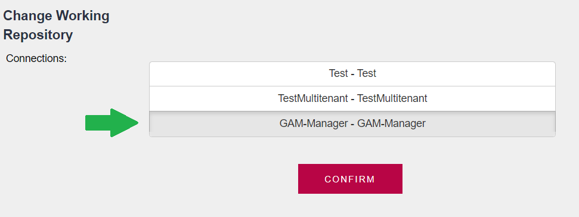

GAM Manager Repository is a particular Repository used to administer the rest of the Repositories, and users of this Repository are the only ones who can create new Repositories and manage them.
This document explains how to connect to "GAM Manager Repository".
The GAM Repository Connection to "GAM Manager Repository" already exists in the GAM database.
1. Connect to GAM Manager Repository using "gamadmin".
You should create an entry in the SysConnectionConfig table (in the GAM database) with the GAM Repository Connection to "GAM Manager Repository". The way to do this is through the GAMDeployTool. See GAM Deploy Tool: Creating the connection.gam file.
After obtaining the connection.gam file, copy it to the virtual directory (or root of the web app for JAVA applications). Now you are able to connect to the "GAM Manager Repository".
2. If the only connection associated with the key contained in the connection.gam file is "GAM Manager Repository", you can log in using "gamadmin", and connect directly to "GAM Manager Repository".
If the connection key has more than one connection associated ("GAM Manager Repository" and another one), the application will connect to the default repository selected. By default, it is the master repository.
In that case, you can "Change working Repository" by going through this link in the GAM Backend.

If GeneXusSecurity.GAM.GetDefaultRepository(&RepositoryGUID) &isConnectionOK = GeneXusSecurity.GAM.SetConnectionByRepositoryGUID(&RepositoryGUID, &Errors) Else &ConnectionInfoCollection = GeneXusSecurity.GAM.GetConnections() If &ConnectionInfoCollection.Count > 0 //The first connection found is established by default &isConnectionOK = GeneXusSecurity.GAM.SetConnection(&ConnectionInfoCollection.Item(1).Name, &Errors) EndIf Endif
The connection to the Repository is stored in the web session.
If the user is not enabled in the Repository he/she is trying to connect to, an error is thrown: "User Unknown".
This error occurs at login:
&LoginOK = GAMRepository.Login(&UserName, &UserPassword, &AdditionalParameter, &Errors )
So, after performing "Change Working Repository", the user who is logged in will be automatically logged out unless he/she is a user of GAM Manager Repository. When logged out, you can log in using "gamadmin" credentials, as shown in figure 2.
Now you are working at "GAM Manager Repository". There you can add new administrator users, and perform all the tasks these users can (see: Howto: Create new Repositories).
The GAM Backend uses the GAM API, so the objects distributed in GAM Library can be taken as examples of how to program the desired operations.
1. You can have the GAM backend published only to administrators of the GAM Manager Repository, so the connection key will need to associate only the connection to this Repository.
2. Otherwise, if the application installation is the same for all users (administrators, as well as non-administrator users) you need to associate the connection key with all the necessary connections. In the code, you need to set the connection to the corresponding GAM Repository Connection depending on the user who has signed in. See HowTo: Get and Set GAM Repository Connections.